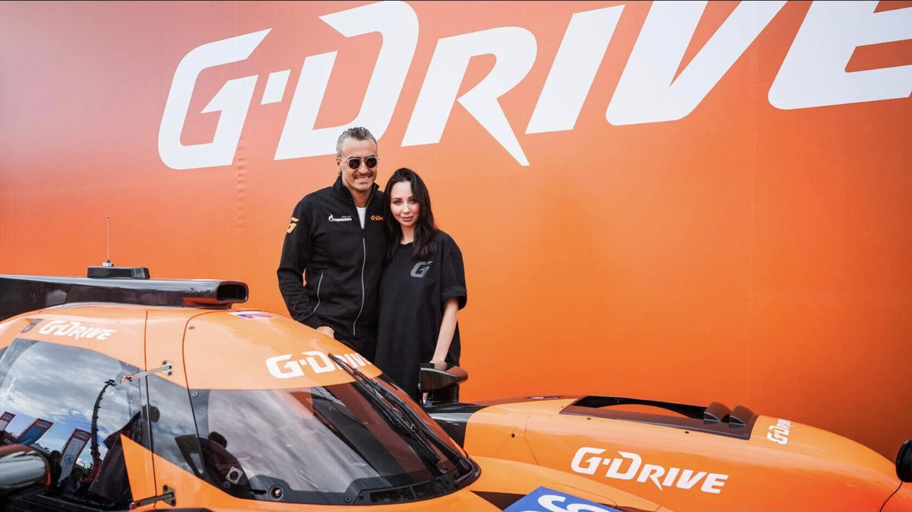
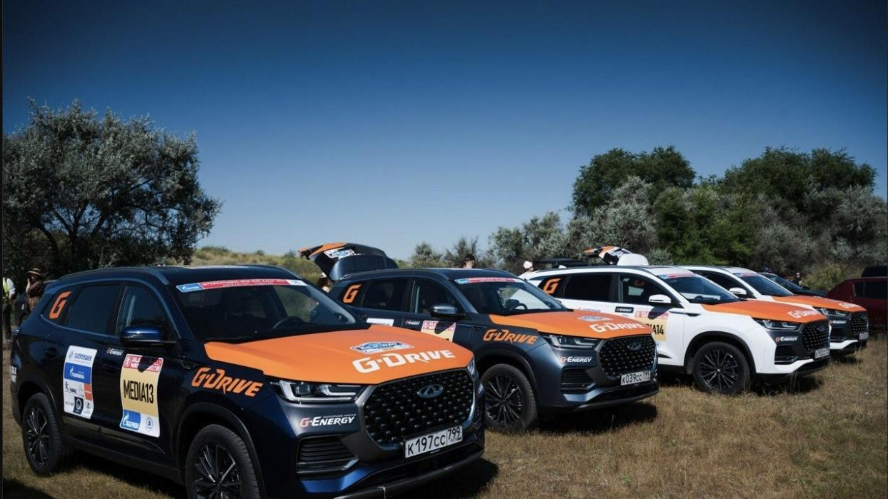
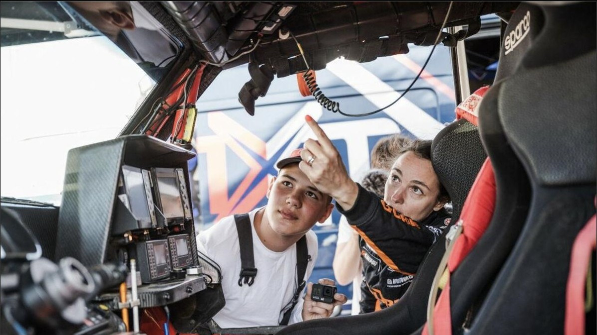

шёлковый путь
- клиент
- сеть АЗС Газпромнефть (бренд G-Drive)
- год
- 2022
- отрасль
- спорт, нефтегазовая промышленность
- направления
- btl, atl, event-маркетинг
задача
интегрировать бренд в гонку и сделать его присутствие заметным
идея
построить вокруг спонсорства кампанию 360




как сделали
- 01автопарк на маршруте
брендированные машины на трассе, пять экипажей в пресс-туре
- 02бренд-зона
локация для отдыха, где проводили презентацию G-бургера и автограф-сессии
- 03b2b-программа
отдельный маршрут для партнёров клиента, которых привозили на гонку
- 04викторина в ВК
механика для тех, кто следил за ралли из дома, с наборами продукции победителям
- 05приз «Движущая сила»
амбассадоры G-Drive вручили собственную награду на церемонии награждения
- 06спецпроекты
репортажи на Auto Mail.ru и эко-инициатива от сети АЗС «Газпромнефть»
- 07мерч
одежда с уникальными шрифтовыми и графическими элементами
результат
- 546К просмотров викторины в ВК
- 5 189 участников викторины
- 168 сообщений в СМИ
- 1 200 подарочных кейсов раздали участникам ралли
- 10 000 энергетиков в руках зрителей